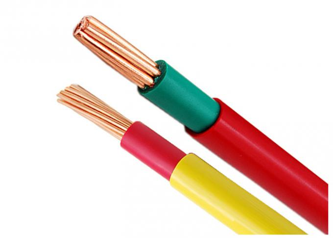

Turning CO2 carbon dioxideinto oxygen and carbonC02 -> C + O2
Have to strip out the Carbonfree the Oxygen into air.
Ultraviolet light breaks the CO2 molecules.
Pure form of carbon is graphiteextracted from CO2 molecules.
High energy electrolyzers are needed
Any Car's Combustion Engine provides heat as energy source.
This Muffler Spits Oxygen, and collects carbon powder residue!
Just clean-up the filter and collect pure graphite powder.
When outside temp is below zero, cold air is pushed in through a trap.Energy is saved when compressor is inactive!
You pilot a flying drone,as if you were a duck.
Joining a group of ducks in a migration flight gives full bonus!
Ploymisation add flex to PET plastic.The birth to a new material:
The new electrical wires insulator!
Stays soft at extreme temperatures (-10K to +10K degrees)
PET-O-PLASTICSupports 10x faster electricity

I am The Apeman!
any combustion engine.
is a steam power source.
activates a push-wheel mecanism
increasing 60-70% energy efficiency.
Music therapy involves using a person’s responses and connections to music to encourage positive changes in mood and overall well-being.
Music can be used in daily life for relaxation, to gain energy when feeling drained, for catharsis when dealing with emotional stress.
End of Chapter.
Apeman